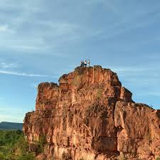
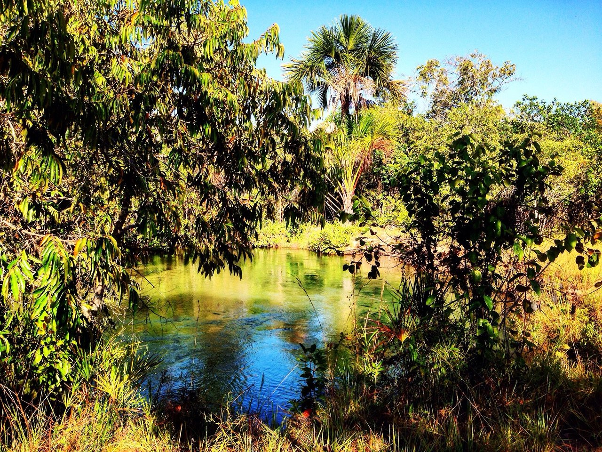

Roteiros e Atividades

Morro do Pico
- Horário: 7h às 11h ou final da tarde
- Transporte: Carro ou 4x4
- Hospedagem: Hotéis ou pousadas rurais
Vista panorâmica incrível, ideal para trilhas curtas e contemplação do pôr do sol. Ótimo ponto para fotos e relaxamento.

Trilha de Corrente
- Horário: Manhã inteira (7h – 12h)
- Transporte: Carro ou 4x4
- Hospedagem: Hotéis no centro ou pousadas rurais
Trilha ecológica de nível moderado, com matas nativas, córregos e vegetação típica. Experiência única de contato com a natureza.

Serra dos Dois Irmãos
- Horário: Tarde (14h – 18h)
- Transporte: Carro ou 4x4
- Hospedagem: Hotéis ou pousadas no centro
Formação rochosa simbólica com trilhas leves, ideal para piqueniques e fotos. Vista panorâmica encantadora da região sul de Corrente.

Nascente das Pedras
- Horário: Livre, ideal em dias secos
- Transporte: Carro 4x4
- Hospedagem: Hotéis no centro ou pousadas rurais
Local pouco explorado, com vegetação muito preservada e águas puras e transparentes. Abriga anfíbios e destaca-se pela importância ecológica.